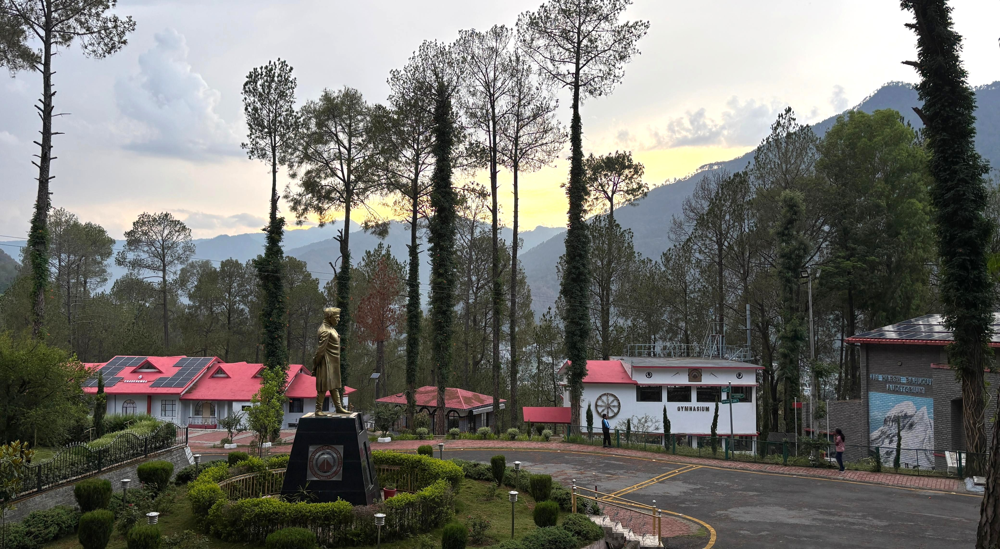
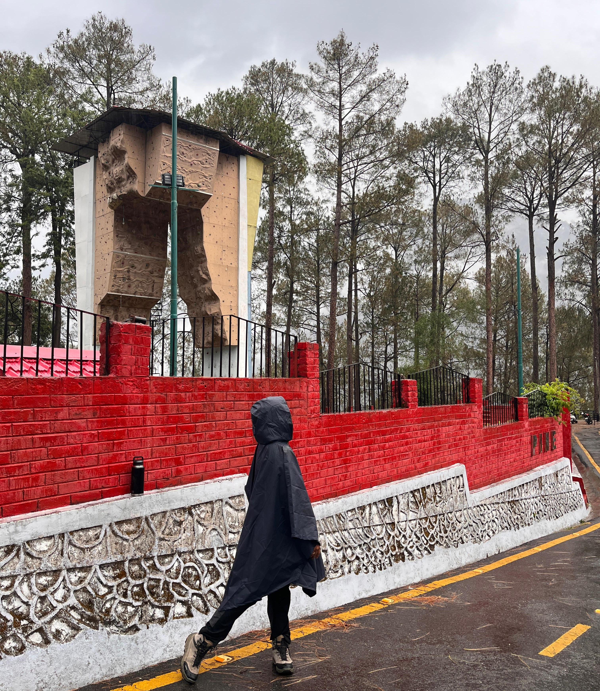
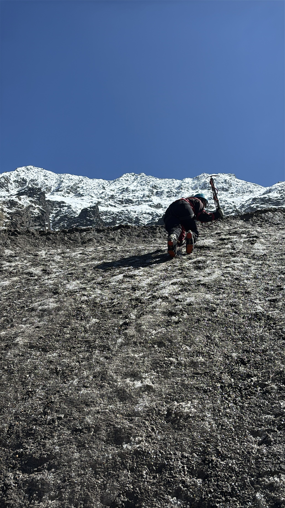
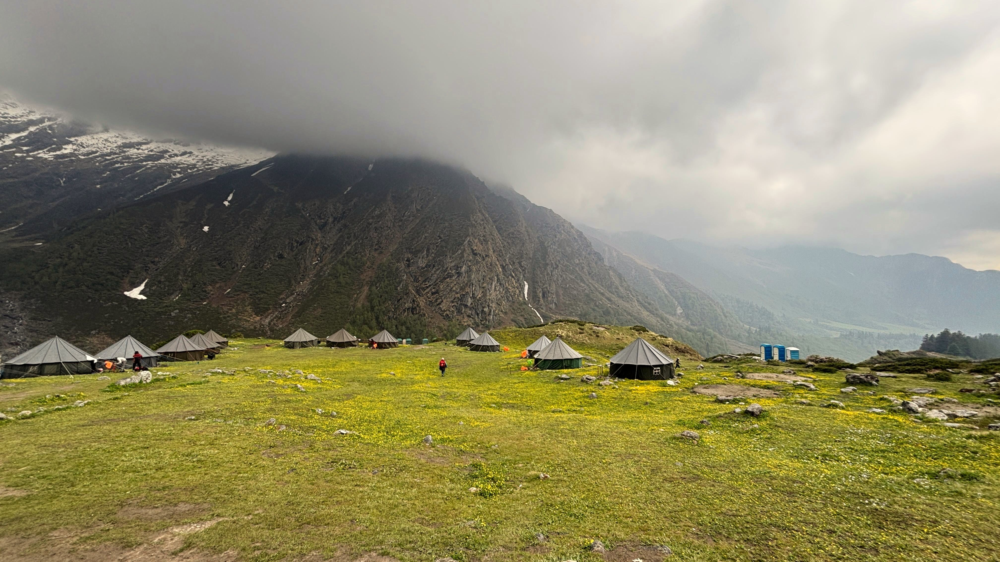
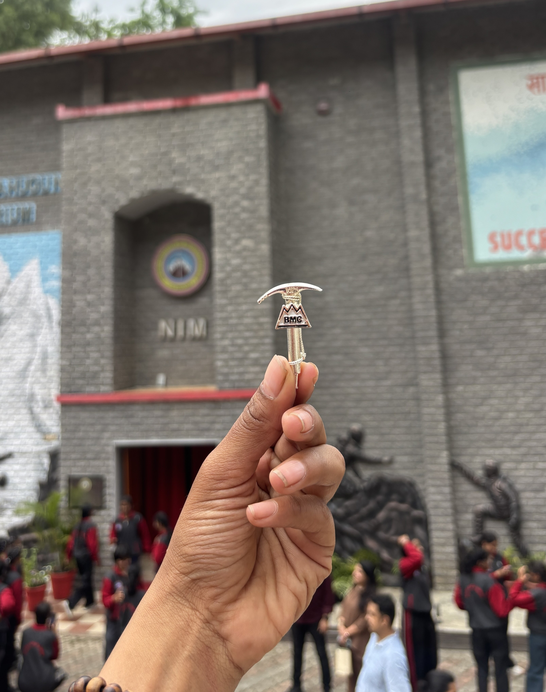

I CAME BACK AND COULDN'T EXPLAIN IT.
I came back from 28 days in the mountains and couldn't explain to anyone what had happened to me. My body was in Bengaluru. My mind was still on a glacier, lying on a slope somewhere, staring at a snow peaked mountain with the sun on my face, not knowing what day it was. This is my attempt to write it down.

Couldn't see much. Just the outline of something large and the sound of my own bag hitting the floor of the hostel. There were six beds in the room — iron bunk beds, all connected. One person moves at night and all six creak together in a groaning chain. I found mine, set an alarm, and slept.
The next morning, I was three minutes late for the 5:15 fall-in.
Three minutes. That was how NIM introduced itself to me — with a jog. Not a conversation, not an orientation. A jog. I remember thinking: okay then. So that's how it is.
That was day one. By day twenty-eight, three minutes late would have been unthinkable.
I have always loved the mountains. This course was never impulsive — it was a question I had been carrying for years, waiting for the right answer. I wasn't scared when I arrived. I was excited, with a layer of nervous underneath. I am someone who holds herself to a high standard. Acing the course was always the side outcome. I wouldn't take less than that.
If it's your calling — it will keep calling.
I have been active most of my life — running, yoga, gym on the days I showed up. I assumed that was enough. It wasn't.
The training you do before BMC doesn't make the course easier. What it does is let you bear the difficulty with ease. There is a difference. One is about surviving the day. The other is about having enough left to help your rope-mate carry the rope when her legs have nothing left.
Run with a loaded rucksack — at least 15–20 kg. Walk with it, climb with it. I trained with 5 kg and thought I was ready. It took time to adapt that I didn't have to spare. If you have access to a wall gym, use it — rock craft will feel far less daunting.
Pack light. The things that truly saved me: Good quality trekking boots with high ankles — non-negotiable. High ankle support reduces the risk of twists on uneven, loose, or icy terrain and you will encounter all three. Woolen cap and a roll of dry tissue. Everything else was weight. As for snacks — bring something that gives you instant energy. For me it was skittles. Find your thing and pack it.
Avoid plastics. Carry them out if you bring them in. The mountains deserve that from us.
The course costs ₹27,286 for 28 days — stay, three meals a day, equipment, and all training included. The government subsidises it to keep mountaineering accessible in India. Application is smooth with a step-by-step process on the NIM portal. The medical certificate must carry valid information and be signed by an authorised medical officer with seal and signature. Don't cut corners on that.
Apply at nimindia.net
NIM is in Uttarkashi. I expected cold. The first two days hit 28–30 degrees. Then the rains came in the evenings and didn't leave.
The hostel is not luxurious. It doesn't try to be. Hot water, clean spaces. Enough. More than enough, once you understand what enough means — which the mountains will teach you whether you ask or not.

The day started at 4am. Chai. Not optional, not ceremonial — just chai, in the dark, before anything else. By 5:15am, backpacks on, fall-in at the campus. Then the walk to Tekhla for rock craft, or a hill walk on the days that called for it. Sport climbing on others. You returned by bus around 4pm.
Then: lectures from 4:30 to 8pm. A different subject every evening. Knots, navigation, mountain medicine, route-finding, map reading. The instructors are not teachers who know a subject — they are people who have been inside the situations they describe. You learn from them without realising you're learning. You watch how they move and something shifts in you.
There was a full moon one night. It hid behind clouds and then came through. I was walking in the campus and the mist was doing something to the light and I stopped and just stood there. Nobody tells you about the small unremarkable things that stay with you the longest.
There is no network from Tela campsite onwards. Satellite phones are provided for emergency purposes only. Plan accordingly — tell the people who love you before you go in. They will be fine. So will you.

The groups were put together across states, across backgrounds. You are tied to people you have just met and expected to trust them with your weight on a wall, and somehow it works.
Shaila was the youngest of us. It was her first time seeing the mountains. Her first time seeing snow. I watched her look at the peaks and the flowers and the sunshine hitting the glacier and her face said everything — the pure unfiltered wonder of someone encountering something for the first time and having no defences against it. She was mesmerised. You don't forget a face like that.
Tia was strong. There were things that needed tuning, and she tuned them through this course. That is not a small thing — not everyone arrives ready to be changed. She was.
Prathistha was quietly good at everything. The language of ropes and anchors and ice came naturally to her. She made it look easy without making anyone feel less.
Neha. Young, kind in a way that felt almost surprising. When she spoke to you it felt like being spoken to by someone the world hadn't reached yet. Funny and warm and genuine all at once.
Nisha. There is a child in all of us that we silence as we get older. We tell it to sit down and behave. Nisha had not done this. Her child was still running around, making everyone laugh, reminding me that the goal was never to grow up. The goal was always to keep that child happy.
Priya. There is a quiet strength in her. She observes, learns, and when the moment comes, she acts with precision and confidence. Her determination is inspiring.
BMC 293 Ladies Batch. The award goes not to an individual but to the average — how well the group performed across all crafts, discipline, behaviour, marching, and how they treated the people around them. How they helped each other. Every one of us earned it.

We walked from NIM to Tekhla with packed rucksacks. That was deliberate. You needed to get used to the weight before the altitude and the real terrain arrived. I had trained with 5 kg. The rucksack at Tekhla was not 5 kg.
I had sport climbing experience from a wall gym in Bengaluru. It gave me real confidence here. The holds on actual rock read differently — there's no coloured tape, no set route, no instructions. But the body knowledge was already there. It went smooth. For those without climbing experience: the fear of heights is something the course addresses directly. The instructors work through it with you. Show up and trust the process.
- Boulder climbing and long pitch climbing
- Hand grips and foot placements on rock
- Overcoming fear of heights
- Reading natural rock holds
- Anchoring — building secure protection
- Belaying — protecting your climbing partner
- Self anchor — securing yourself independently
- Jummaring — ascending a fixed rope
- Rappelling down a long pitch
Rock craft is where you start to understand the language of the mountain. Not the romance of it — the actual grammar. Where to put your hand, where to trust your foot, when to move and when to stay still. The instructors have seen every mistake you are about to make. They let you make some of them.
Leaving the institute felt like stepping off solid ground. The mountain section of BMC is a two-day walk before the real work begins — and those two days earn their place in the story.
Day 1 — Buki Village to Tela. Steep from the beginning. The path was wet and muddy, loose underfoot, the rain doing exactly what it wanted. This day reminded you fast that the rucksack you thought you'd adapted to still had something to say. You moved through it. You kept moving. One step, then another.
Day 2 — Tela to Gujjar Hut. Everything changed. The path opened into views that looked edited — the kind of mountain scenery that doesn't seem real even when you are standing inside it. Meadows, ridgelines, peaks. Wallpaper views, except you were breathing them in at altitude with 25kg on your back.
Then the hail came.
The mastin appeared in this section — your aluminium food box, issued and yours from this point until the last day. Breakfast at 6:30am: protein, carbs, fibre, balanced and warm. And fresh lychees. I had not had lychee like that in Bengaluru — cold in the morning, sweet in a way that felt earned by the walking. The conversations at those meals were childlike and easy in the best possible way.
Soup time became the anchor of each evening. Sun going down, mountains turning golden, hot cup of soup in hand, humming songs with Lakshmi, giggling about nothing in particular. Some days the clouds rolled in so thick you couldn't see the person in front of you. The next moment: completely bright and sharp and clear. The mountain does what it wants.
We washed the mastin in ice cold water three times a day. We disliked that intensely. And then somehow the mastin became the setting for every good conversation we had up there. Some of the most honest things I said in those 28 days were said over that cold aluminium box.

Snow and ice craft happen at base camp. Altitude changes everything. At lower levels your body is doing what it knows. At 12,300 feet, your lungs are already working overtime just to keep you upright. Then comes the walk to the glaciers. Then the technique work on top of all that.
5B — Snow Craft
Snow is deceptive. It looks still, even forgiving. It is neither. The first time you try to walk on a slope and feel your foot slide, your brain recalibrates fast.
- Toe kicking — ascending steep snow
- Side stepping — traversing slopes safely
- Zigzag — managing gradient on ascent
- Heel kicking — controlled descent technique
- Snow stake — vertical anchor in snow
- Deadboy / dead man — buried horizontal anchor
- Ice axe as snow anchor
- Self arrest — stopping your own fall
- Team arrest — stopping a rope team fall
5C — Ice Craft
Ice is the hardest classroom. Everything must be precise — your foot placement, your axe angle, your weight distribution. There is no margin on a glacier.
- Wearing crampons correctly
- Attaching ice axe and self harness
- Pick position — primary climbing grip
- Adze edge position — flat traversing
- Support position — balance and rest
- Getting down on ice safely
- Driving ice pitons into glacier wall
- Building ice anchors
- Hammering on ice — technique and force
- Traversing on ice
- Lead climbing role
Driving ice pitons was the hardest thing for me. On the glacier wall, ice all around you. You drive the piton at the correct angle, correct pressure. Simple in theory. But pitons are not obedient. Sometimes there is rock beneath, or debris, or the tip has gone blunt. And it refuses. A very specific, unglamorous battle between your body and a small piece of metal. I won, eventually, most of the time.
There were also the navigation and academic tests — rope knot tests within a set time with marks allocated, map reading covering orientation with a service protractor, map to ground and ground to map, and a written exam for 100 marks. The navigation exercise was a rope activity: given a lat-long coordinate, navigate to that location on ground, get a signature from the instructor stationed there, return. Speed counted. It wasn't just a lesson. It was a race.

It was a crevasse crossing day. I was acting as lead climber — the one who had fallen into the crevasse on the slope. So I lay down on the mountain. Lay there. Free. Completely unbothered. After a while, I closed my eyes.
Then I opened them.
The sun was shining. A snow peaked mountain was directly in front of me, enormous and still. I didn't know what time it was. I didn't know what day. I didn't know the date. It did not matter at all. It was the most present I have ever been in my life.
Then I looked at my watch.
Monday.
A random Monday can look like this. A random Monday can be you, lying on a glacier at 12,000 feet, staring at a mountain that has been there longer than language, with the sun on your face and nothing at all that needs doing. This is what I mean when I say something inside me has changed.
Some days feel like they have been waiting for you.
I found my spot at base camp too. I am good at finding spots — quiet places that nobody else is using, with the right angle of light. Mine had cold grass under my feet, cold air on my face, buttercup flowers in every direction, and a mountain view straight ahead. I brought a sketching book there. At one moment the sun was shining full on the page, then clouds rolled in and the cold breeze hit, then bright again — all of it happening at once, like the mountain couldn't decide. I sketched very little. Mostly I just sat.
There was another moment — Lakshmi and I, lying in the grass with the flowers all around, doing yoga poses, laughing at each other, completely ridiculous. And then the sky opened up. The clouds split apart and the full shape of the mountains came through, all at once, like a curtain being pulled back. That majestic, absurd, completely real view. You cannot prepare for it.

The day after the written exam was height gain day. The steep sections began from the very first step. There was a small stream crossing where the mud was loose against the rocks — slippery, unstable, heavy underfoot. And then the long steep climb began.
On the way from Tela to Gujjar Hut there had already been a moment that hit my limits. After a steep section the hail came. Hailstorm, 25 kg backpack, poncho flapping in the wind, every step costing something. That was exhausting in a way that is hard to describe from a city. But you move. You keep moving. One step in front of the other.
On height gain day the altitude difference made itself known differently. The climb became tougher. The air thinner. There were moments of gasping — actual gasping — where the body is simply fighting for what it needs and you have to wait for it, trust it, keep going anyway.
And then the steep section opened into a grassland. And there it was. DKD2 — Draupadi Ka Danda 2. A sharp mountain, 18,600 feet, enormous and precise against the sky. The shape of it was unreal. You could look at it and feel something in your chest that doesn't have a name. I looked at it with loving eyes. That is the only way I know how to describe it.
There was never a moment where I doubted myself. Never a thought of I can't do this. Whatever came, it would be done — at any cost. That is not ego. It is not overconfidence. It is self belief — the quiet, grounded conviction that I have in myself in these aspects. The mountain tested it. The mountain confirmed it.

The last day was graduation day. Each person was given an ice axe — a badge of honour, earned by sweat and blood. Not given, not gifted, not symbolic. Earned.
It is a mark that says: you are capable of more. That is all it says. That is everything it says.
Mine is on my wall. It will be in my heart longer than that.
And Rope 9 won best rope. All of us. Not because of any one person — because of every person. Shaila's wonder, Tia's grit, Prathistha's knowledge, Neha's kindness, Nisha's joy. The average of what we were together was something the instructors recognised. I am proud of that more than anything else from those 28 days.
BMC 293 Ladies Batch. The average of discipline, craft, behaviour, marching, and how we treated each other — that is what won it. Collective, not individual. Every one of us carried the rope.
The last evening, the sky went orange and then pink. The kind of sky that makes you stop walking. I stood at the campus entrance — the mountains ahead, everything behind me — and stayed there longer than I needed to. The next morning we left early. Before the campus could properly wake up, before the mountains could say anything else. The bag went on my back. The gate was behind me. I walked.
It is for someone who loves the mountains with something real behind the love. Not Instagram love — the kind where you are willing to be cold and tired and uncertain and still show up the next morning.
It is not for someone who expects their bag to be carried. Not for someone who thinks this is a trek with a nice view at the end. The beauty is real but it is not free. You earn it with your calves and your lungs and the quieter parts of your mind.
The mountain does not differentiate. Male, female, young, old — it gives everyone the same conditions and asks the same questions. What you bring to those questions is entirely up to you. Come with true interest. Come for the love of the mountains, not for a certificate. Go with an open mind — not vague, but genuinely willing to learn from anyone around you regardless of age or experience. Some of the most useful things I learned at NIM came from people younger than me.
Train seriously. Pack lightly. Wake up early. And be kind to the people on your rope. You will need them and they will need you, often at the same moment.
I came home to a city. Traffic. Screens. Everyone moving fast toward things that felt important.
For five days, I was not fully present. My body was in Bengaluru. My mind was on a glacier somewhere, or lying in the buttercup field, or standing at soup time watching the clouds roll in. Zoning out for days. Those around me noticed before I did.
I have felt post-trek drops before — one day of strange quiet, then back to normal. This was different. Longer and heavier and harder to explain. It took five full working days to return to what I was before. And by then I understood: I wasn't returning to what I was before. That person was gone. Something else had come back in her place.
"In every walk with nature, one receives far more than he seeks."
— John Muir
We do not look up enough. We do not look at clouds, at sky, at the orange that happens when the sun decides to leave for the day. We are capable of taking ourselves to these places — our bodies are extraordinary, quietly capable things — and we forget to be grateful for that. NIM gave me back that knowledge. Not as an idea. As something I know in my body now.
There are places on this earth that people see in photographs and think that can't be real. It is real. Green mountains, yellow buttercup fields, snow peaks that have no business being that white, a sharp mountain at 18,600 feet called DKD2 that you can look at with loving eyes. I have been there. I carry it with me now.
Something inside me has changed. I am still understanding what. I suspect I always will be.
If this made you want to go — good. Here is everything you need to actually apply, with no guesswork.
Applications, medical forms, and the full training calendar are on the official NIM website — always check there directly for current batch dates and fees, since these are set by the institute and can change year to year.
Fitter than "active." Running, yoga, or gym a few times a week is a good base, but the thing that actually matters is training with a loaded rucksack — at least 15–20 kg — on uneven terrain, not flat pavement. I trained with 5 kg and it wasn't enough; the gap between "fit" and "fit for this" is bigger than it looks from the outside.
Eligibility criteria (age, medical requirements) are set directly by NIM and can be updated year to year, so I'd rather send you to the source than give you a number that might be outdated by the time you read this. Check the official Basic Mountaineering Course page for the current criteria, or call the training desk directly at 7060 717 717.
Stay, three meals a day, all training equipment, and instruction for the full 28 days — it's heavily subsidised, which is part of why NIM is accessible in the first place. What it doesn't cover: your travel to and from Uttarkashi, personal gear like boots and a warm cap, and any snacks or personal items you want along the way.
Everything is on the official NIM portal — you check the training calendar, pick a batch, and apply online. You'll also need a medical certificate signed and sealed by an authorised medical officer; don't cut corners on that part, incomplete medical forms are one of the most common reasons applications get delayed. Full details and the application link are in the NIM Info section above.
Less than you think. Good high-ankle trekking boots are non-negotiable — they protect against twists on loose, wet, or icy terrain, and you'll hit all three. NIM provides the technical mountaineering gear and clothing, so most of what you carry is personal essentials, not gear.
I'm putting together a full packing list based on what I actually carried and what I wish I had — it'll be up on the site soon. Follow @she_explores.wild and I'll post when it's live.
Yes. Rock craft is where the course actively works through fear of heights and unfamiliarity with climbing, and the instructors have seen every version of "I've never done this before." Prior climbing experience helps, but it isn't required — showing up and trusting the process is what actually matters.
At the institute in Uttarkashi, yes. Once you move past Tela campsite toward base camp, no — there's no network at all. NIM provides satellite phones for genuine emergencies only. Tell the people who care about you before you go in; you'll both be fine.
Simple, warm, and better than I expected. Balanced meals with protein, carbs, and fibre, and at higher camps you get an aluminium mastin (food box) that's yours for the trip. There's a non-veg option most days alongside the vegetarian one. Nothing fancy — but after a day of climbing, it tastes like the best meal you've had all year.
Grade arrives by post. My instructor said: "You will do well when you come for AMC." I am choosing to sit with that for now. The ice axe is on my wall. That is enough.
BMC 293 · Rope 9 · NIM Uttarkashi · June 2026